JW Time 4.1.1: uso compartido en Zoom más limpio, contenido multimedia más fiable y reproducción más estable.
Uso compartido en Zoom: cuando JW Time inicia el uso compartido, el borde de selección azul claro y el número del monitor ya no se ven en la Pantalla pública ni en la Pantalla del Contador de Tiempo. Para ocultar también el borde verde del contenido compartido, desactiva en Zoom la opción «Mostrar borde verde alrededor de mi contenido compartido»; con la optimización de vídeo activada, Zoom puede seguir mostrándolo.
Multimedia: se han corregido las vistas previas y los controles de posicionamiento de imágenes y PDF, y se han mejorado el panel de música, las descargas y la sincronización de sitios web; ahora se distingue entre cánticos no disponibles y errores de conexión.
Congregaciones: la posición, el tamaño y la escala de las ventanas se guardan y restauran con mayor fiabilidad para cada congregación, incluso al cambiar de monitor o de valor de DPI.
Traducción al inglés: se ha unificado la terminología en inglés relativa a reuniones, consejos, estado del programa y visitas del superintendente de circuito.
Reproducción: mayor estabilidad al cambiar directamente entre audio, vídeo, imágenes, PDF y sitios web; los eventos retrasados del contenido multimedia anterior ya no interfieren con el actual.
Visita del superintendente de circuito: cuando la visita se aplica mediante un evento programado, el botón sigue apareciendo activo, pero los cambios se realizan desde el evento especial, lo que evita modificaciones involuntarias.
Seguridad de acceso: los PIN guardados en el PC ahora están protegidos por la cuenta de Windows. Al restaurar una copia de seguridad en otro PC o con otra cuenta, JW Time desactiva únicamente los accesos cuyos PIN no se pueden recuperar y te guía para volver a configurar esos PIN.
En el primer inicio, JW Time muestra un asistente que recopila las configuraciones esenciales antes de abrir la aplicación.
Esta es la ruta recomendada para una nueva instalación, porque evita tener que buscar cada opción de inmediato
en los paneles de configuración.
Idioma y formato: elige idioma de la interfaz, idioma del programa y formato de hora.
Congregación: establece el nombre del perfil inicial, útil si administra varios perfiles en el futuro.
Reuniones: indica días y horas de inicio de la cuenta atrás automática.
Opciones de reunión: activar, si es necesario, adaptación de duraciones y pausa automática entre partes.
Pantallas: Configure la pantalla del temporizador y la Pantalla Pública en los monitores correctos.
Al final del asistente, puede abrir JW Time y completar solo las opciones más avanzadas, como Medios, Servidor web,
Grabaciones y Backups.
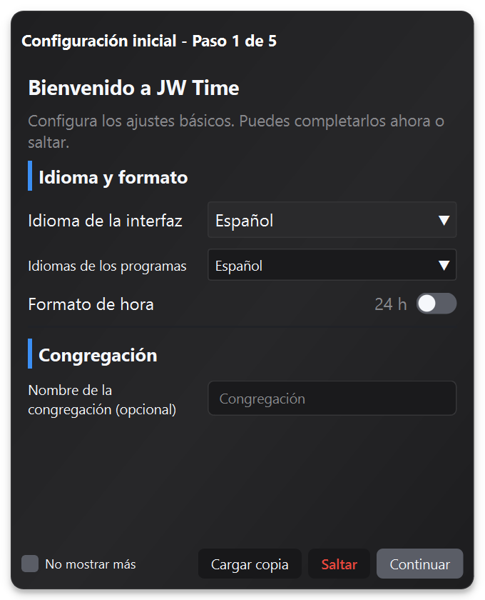
Comprobación rápida si omite el asistente ↑ Índice
Si cierra u omite el asistente, puede configurar manualmente los elementos esenciales desde Configuración y la ventana principal.
Esta lista de verificación también sirve como una revisión rápida antes de la reunión.
Idioma, perfil y programa
Vaya a sección 9 · General para idioma y formato de hora, luego a
sección 10 · Congregaciones si necesita crear o seleccionar un perfil. comprueba eso
La lista cargada corresponde a la semana y al idioma deseado.
Abra la sección 4 · Ventana de medios para consultar canciones, videos e imágenes de la semana.
Las opciones de caché, calidad y fondo se encuentran en sección 13 · Medios.
Temporizadores, mensajes y grabación
Utilice la ventana principal para iniciar temporizadores, enviar mensajes al temporizador y abrir el panel REC.
Si grabas reuniones, primero revisa las opciones en sección 16 · Grabaciones.
La pantalla principal es el corazón de la aplicación. Desde aquí puedes iniciar, administrar y monitorear todos los temporizadores.
de la reunión, ver información clave como el título de la parte actual, el reloj y la hora
residuos, así como comprobar mensajes y notificaciones importantes.
Áreas principales
1.1 · Título de la parte y reloj
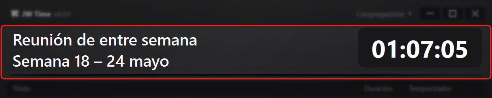
El título de la parte en progreso se muestra en la línea superior, mientras que el reloj con
la hora actual o, cuando inicias un cronómetro, la cuenta atrás del tiempo restante. También aparece en formato de 12 horas.
Sufijo AM/PM en tamaño más pequeño para mejorar la legibilidad.
1.2 · Tabla de temporizadores
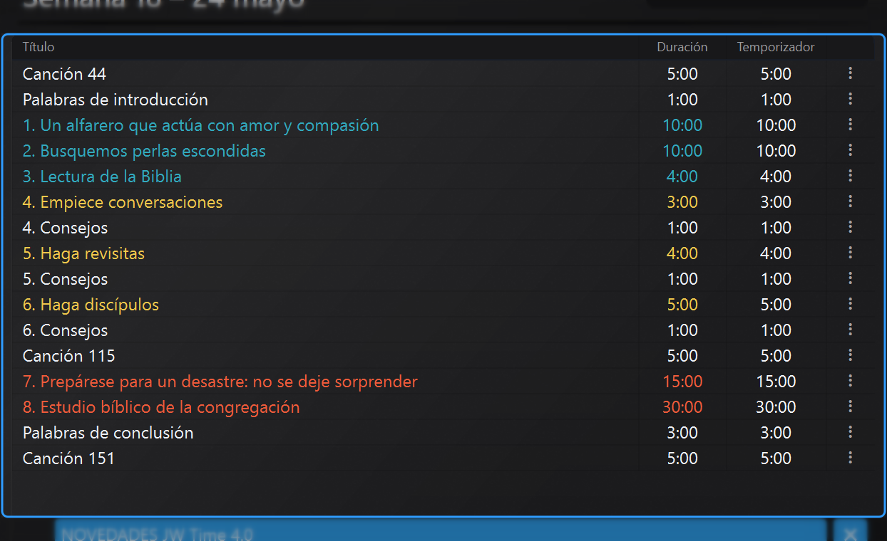
Muestra la agenda de la reunión (título, duración, estado). El contenido se carga automáticamente según el día.
seleccionado: la app reconoce si es entre semana o fin de semana y propone la lista correcta. Para los botones
y acciones detalladas, consulta la sección 3 · Manipulación de temporizadores.
Si activas Mostrar columna Fin en los ajustes generales, la tabla también muestra a qué hora terminarían la parte actual y cada parte siguiente.
No es una hora fija del programa: es una proyección actualizada en tiempo real según la hora actual, los temporizadores restantes y las desviaciones acumuladas.
1.3 · Hora de finalización estimada
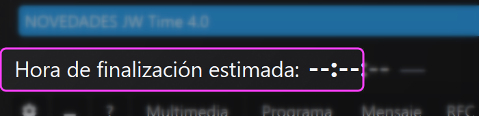
Muestra la hora de cierre esperada según el cronograma. La desviación aparece junto a:
+m:ss (amarillo dentro de 1', rojo más allá) = retraso
−m:ss (verde) = avance
La hora y el indicador se actualizan en tiempo real. Si están activos los ajustes adaptativos para el Estudio bíblico
o el Estudio de La Atalaya, las duraciones se recalculan para ajustarse al horario de cierre.
1.4 · Tiempo de pausa/cambio de orador
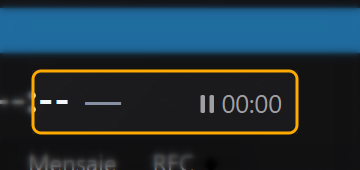
Contador acumulativo hh:mm:ss de pausas técnicas/cambio de orador: suma el tiempo durante el cual el cronómetro
ha estado pausado. Durante la pausa el cronómetro permanece detenido mientras este contador aumenta. Un clic
en el indicador pone el total a cero.
1.5 · Teclas principales de gestión de temporizadores
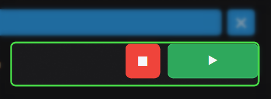
Controles para iniciar, detener y gestionar los temporizadores: Parar (rojo), Pausa e Inicio/Siguiente (verde).
El botón Pausa pausa el cronómetro parcial (el conteo permanece detenido) mientras el tiempo de pausa/cambio de orador
sigue aumentando. Para salir de la pausa, presiona Pausa nuevamente o salta a la siguiente parte con
Inicio/Siguiente: el tiempo acumulado se registra en el contador al que se refiere el punto 1.4.
1.6 · Noticias (comunicaciones)
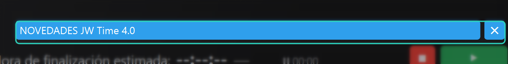
Cuando hay comunicaciones oficiales de la aplicación, aparece un cuadro/alerta de "Noticias" en la pantalla principal.
Al hacer clic en él, se abre el panel con el resumen de la actualización.
1.7 · Herramientas rápidas
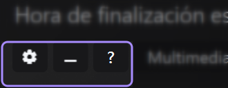
Botones rápidos para abrir configuraciones, minimizar o restaurar la ventana y acceder a la ayuda. estan separados
de los modos de funcionamiento para dejar el resultado final más ligero.
1.8 · Modos de funcionamiento
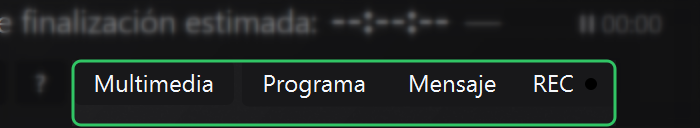
Desde aquí puede cambiar a la Ventana Multimedia, Gestión de programas, Mensajes y el panel REC. el punto negro
junto a REC indica el estado de grabación.
Esta sección ilustra cómo cargar el programa correcto para la semana, crear un programa manual cuando sea necesario y
Desplácese rápidamente por las semanas anteriores, actuales y próximas.
De forma predeterminada, la aplicación carga automáticamente la programación de la semana actual: entre semana
de lunes a viernes y el de fin de semana sábado y domingo.
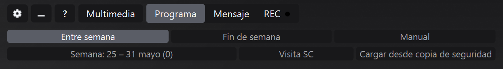
2.1 · Programación automática
Entre semana: carga la programación de los días laborables.
Fin de semana: carga la programación del sábado/domingo, preguntando por la canción para hablar en público.
2.2 · Selector de semana y vista previa del calendario
El botón Semana siempre muestra el rango (por ejemplo, "Semana: 20 – 26 de octubre") con una insignia
que indica el desplazamiento de la semana actual (0, +1, -2, etc.). Un clic abre el calendario compacto para
salte directamente a la semana deseada sin desplazarse varias veces por los botones Anterior/Siguiente.
Insignia instantánea: comprenda si está mirando la semana actual, futura o pasada.
Calendario semanal: elige las semanas directamente de forma práctica.
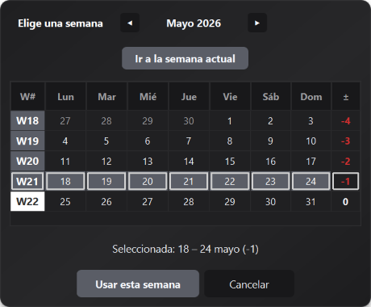
2.3 · Visita SC
El botón Visita SC, ubicado entre el selector de Semana y Cargar desde copia de seguridad, transforma la lista cuando está presente
la visita del superintendente de circuito. Cuando se presiona, el botón se ilumina (ON) y la aplicación prepara automáticamente las partes
partes especiales previstas para la visita.
Reunión entre semana: el Estudio Bíblico de la Congregación se convierte en un segmento fijo de 30 minutos titulado "Visita SC".
Fines de semana: se agrega una entrada dedicada después del Estudio de La Atalaya y las duraciones se ajustan para cumplir con la hora de cierre.
Colores y avisos dedicados: la línea Visita SC adopta su propia paleta y prepara el cántico final específico.
Desactivación rápida: al desactivar el interruptor, la tabla vuelve inmediatamente a la lista estándar sin perder los demás cambios.
2.4 · Cargar desde copia de seguridad
El botón Cargar desde copia de seguridad abre una lista de paquetes guardados localmente, ordenados por fecha, tipo de reunión e idioma.
Es ideal para trabajar sin conexión o restaurar programas ya preparados en otra PC.
Lista detallada: cada línea muestra la fecha de inicio de la semana, el tipo (entre semana/fin de semana) y el idioma.
Carga segura: Los paquetes se verifican y se aplican directamente a la tabla actual.
Mensajes claros: si no hay copias de seguridad disponibles, la aplicación muestra inmediatamente una advertencia.
2.5 · Modo Lista Manual
La lista manual es útil cuando el horario no proviene del programa semanal o cuando se desea preparar un programa especial.
Puede crear o editar entradas a través de la ventana de edición dedicada, configurando el tipo, título y duración, y guardar el resultado.
para reutilizarlo más tarde.
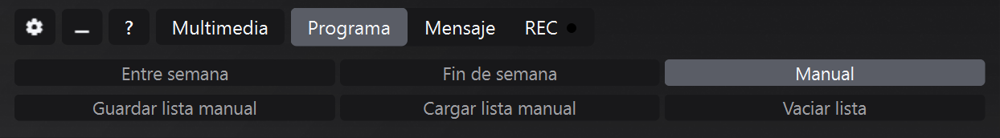
2.5.1 · Panel Manual
Manual: activa la lista personalizada y muestra los comandos dedicados bajo el selector de programas.
Guardar lista manual: exporta la lista actual a un archivo para reutilizarla o transferirla a otra PC.
Cargar lista manual: importe una lista guardada y actualice la tabla vinculada, el temporizador y los medios.
Borrar lista: borra la programación manual de la semana actual y también elimina los medios manuales vinculados a ese borrador.
2.5.2 · Crear y guardar
Activar el modo manual desde el panel Programa.
Utiliza los comandos de la tabla para agregar, eliminar o reordenar filas; cuando es necesario, JW Time abre la ventana de edición de la entrada.
Guarda la lista cuando quieras guardarla para otro momento.
Cuando guarda, JW Time le pregunta qué incluir en el archivo .jwtimeplan.
Elija Programa manual + medios si también desea transferir archivos locales, URL y grupos desde la Ventana Multimedia.
Elija Solo programa de tiempo manual si solo necesita la lista con títulos y duraciones.
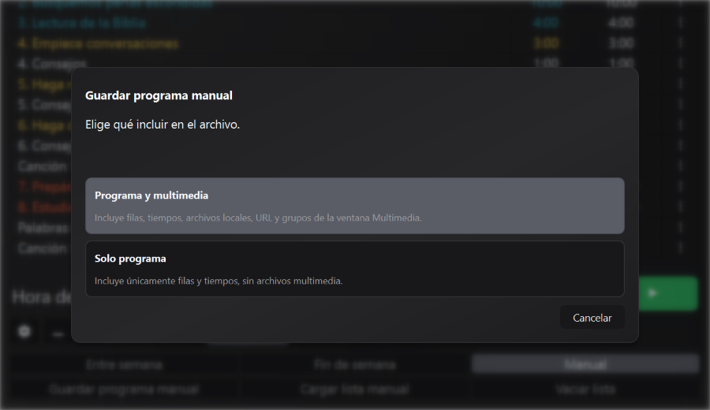
2.5.3 · Recargar o vaciar una lista
Utilice Cargar lista manual para recuperar una lista guardada.
Si la lista contiene líneas reconocidas como canciones o partes estándar, JW Time aplica colores y comportamiento consistentes.
Las ventanas vinculadas se actualizan después de la carga, por lo que el Contador de tiempo y Multimedia permanecen alineados con la tabla.
Utilice Borrar lista cuando quieras reiniciar desde una lista vacía para la misma semana.
2.5.4 · Medios vinculados
Cuando adjunta medios a una lista manual, al guardarlos y cargarlos, se mantiene el vínculo al programa preparado.
Esto es útil para reuniones especiales, asambleas locales o programas que no siguen la semana estándar.
Si un archivo ya no está disponible, la aplicación le notifica cuando abre o usa la ventana Multimedia, para que pueda reemplazarlo antes de la reunión.
Para agregar una canción, use el menú de entrada y elija el elemento de la canción. De esta manera JW Time
registra correctamente el número de canción, conecta los medios disponibles y la pantalla del temporizador adapta la visualización
sin tener que escribir manualmente el título en la línea.
Esta sección explica las principales operaciones de gestión del temporizador, como agregar, editar o eliminar entradas.
y el uso de comandos de inicio, salto y reinicio.
3.1 · Operaciones principales
Menú de línea: abre los tres puntos de la derecha para las acciones disponibles en la parte seleccionada.
Desde el menú puedes iniciar la línea o pasar a la siguiente, agregar una línea arriba o abajo, duplicarla, restablecerla o eliminarla.
Los comandos Agregar línea arriba y Agregar línea debajo abren un submenú con Canción, Parte/Discurso y Consejos.
Editar título/duración: haga doble clic en la celda y luego confirme.
Formatos Duración: 5 → 5:00, 1:30 → 1:30 minutos.
Inicio y progreso:
Línea de inicio inicia la parte seleccionada.
Cuando una línea está en progreso, el comando se convierte en Pasar a la siguiente.
Detener/Pausar administra el temporizador en ejecución desde la barra inferior.
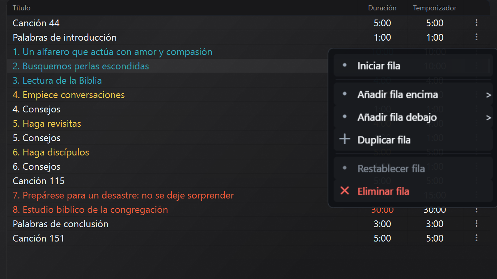
3.2 · Actualizaciones en tiempo real
El temporizador se actualiza constantemente: la cuenta atrás principal en la parte superior muestra el tiempo restante de la parte activa,
mientras que la fila correspondiente permanece resaltada en la tabla. El color de la barra superior recoge el color.
de la parte en curso.
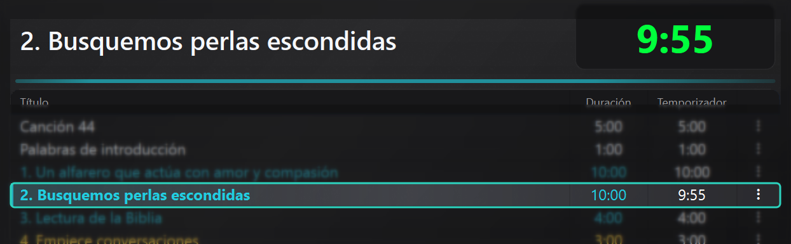
Si cambia una duración o pasa a la siguiente parte, la hora de finalización estimada se vuelve a calcular inmediatamente. Esto permite
para comprobar el delta de adelanto/retraso y el tiempo acumulado para pausas o cambios de orador sin abrir otros paneles.
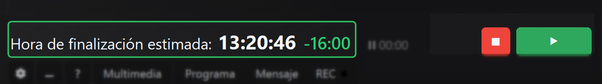
3.3 · Ajuste automático — Estudio bíblico y Estudio de La Atalaya
Si el Estudio bíblico adaptativo y/o el Estudio de La Atalaya adaptativo están habilitados en Configuración, la aplicación apropiada
dinámicamente la duración de la parte seleccionada para mantener la hora de cierre de la reunión. Preocupaciones de adaptación
solo las partes con opción activa y puede aumentar o reducir automáticamente los minutos en función del avance/retraso acumulado.
En la imagen, la línea afectada está aislada y el valor ajustado está resaltado en naranja, por lo que queda inmediatamente claro qué temporizador se ha corregido.
Siempre puedes intervenir manualmente: el adaptativo vuelve a calcular a partir de la nueva situación.
La Ventana Multimedia recoge los contenidos vinculados a la semana: canciones, vídeos, imágenes y referencias útiles del fragmento.
Puede ayudar al operador a preparar la reunión, comprobar los contenidos disponibles e iniciarlos cuando sea necesario.
Nota sobre el uso: la Ventana Multimedia ofrece al operador una herramienta de apoyo para preparar, comprobar y gestionar contenidos multimedia ya disponibles. Su uso práctico depende de las necesidades locales y siempre debe realizarse en armonía con las indicaciones de la congregación y las disposiciones. En caso de necesidad técnica, también puede utilizarse como solución de apoyo o de reserva.
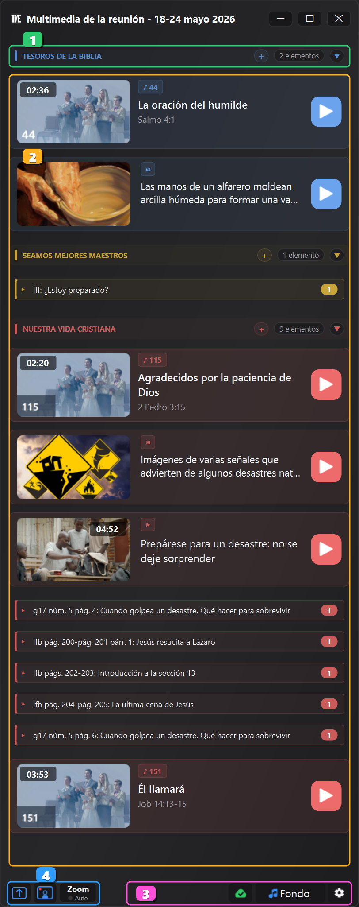
4.1 · Secciones de avisos y medios
El área 1 indica cuando los medios oficiales de la semana aún no están disponibles fuera de línea. Puedes descargarlos
inmediatamente o posponerlo. El mismo comportamiento se puede automatizar desde la configuración de
sección 13 · Medios, activando la descarga automática de medios oficiales.
Debajo del aviso encontrarás las secciones de la lista, con título en color, contador de elementos y comandos rápidos.
Nota: la descarga de medios oficiales requiere que la red permita a JW Time acceder a jw.org y a los recursos usados para los medios. La descarga alternativa introducida para los programas no está disponible para los medios. Si routers, firewalls, DNS o filtros de contenido bloquean sitios religiosos o el acceso de JW Time, los medios oficiales podrían no descargarse; en ese caso puedes usar medios ya disponibles sin conexión o agregar archivos locales manualmente.
4.2 · Lista de contenidos
El área 2 contiene pestañas con vista previa, título, referencia y botón de inicio. Los colores reflejan las áreas de la lista,
para que puedas localizar rápidamente canciones, imágenes, videos y referencias relacionadas con la parte.
Desde el menú contextual puedes marcar manualmente un elemento como usado o no usado. Si Atenuar medios ya usados está activado, los elementos usados siguen siendo reconocibles con un estilo más discreto.
Las ventanas de video, audio e imágenes oficiales también incluyen el modo Global cuando necesitas buscar fuera de la categoría actual.
4.3 · Barra inferior
El área 3 recoge los comandos rápidos de la Ventana Multimedia: contenidos descargados, vista previa, sincronización,
fondo y configuraciones dedicadas. Permanece al final para que sea accesible incluso cuando la lista es larga.
4.4 · Controles de zoom
El área 4 recoge los controles de zoom de la Ventana Multimedia. Están diseñados para quienes muestran medios incluso en
videoconferencia y trabajo con la Pantalla Pública en el monitor de la sala.
Compartir: envía el acceso directo configurado a Zoom para comenzar o dejar de compartir.
Mostrar/Ocultar Zoom: se utiliza para mostrar los oradores o la ventana de Zoom en el monitor público. JW Time oculta temporalmente la Pantalla Pública y le permite ver lo que hay debajo: por esta razón, la ventana de los oradores de Zoom, o una pantalla duplicada con Zoom, ya debe estar colocada detrás de la Pantalla Pública antes de presionar el botón.
Zoom Auto: habilita la automatización del zoom para la sesión. Cuando inicia un medio, JW Time puede enviar automáticamente el acceso directo para compartir y, si está configurado, detenerlo al final.
Antes de usar estas teclas, configure un acceso directo para compartir pantalla global en Zoom e ingrese
la misma combinación en sección 14 · Zoom. Si los dos atajos no coinciden,
JW Time envía el comando pero Zoom no reacciona como se esperaba.
4.5 · Pre-reunión y música de fondo
El panel Fondo gestiona la música antes de la reunión y, si está configurada, también después de la reunión,
sin mezclarlo con los medios de la lista. Durante la reproducción muestra la canción actual, la siguiente canción,
avance y duración.
Puedes iniciar, pausar, saltar a la canción anterior o siguiente, activar la reproducción aleatoria y abrir
la lista. Los ajustes de música, incluido el comportamiento automático y los fundidos, se configuran desde el panel
sección 13 · Medios.
JW Time 4.0 separa las vistas: la Pantalla Pública se utiliza para el contenido visible en la sala,
mientras que la pantalla del temporizador permanece dedicada a quienes siguen los tiempos.
5.1 · Pantalla Pública
La Pantalla Pública muestra cuenta regresiva, mensaje de bienvenida, escritura del año, logo y contenidos
vistas en una ventana separada.
Antes de la reunión: Muestra la cuenta atrás y el texto configurado.
Durante la reunión: puede permanecer disponible para contenido público o escenas dedicadas.
La pantalla Contador de tiempo muestra el reloj, la cuenta regresiva de la parte en progreso, mensajes para el locutor y estados relacionados con la gestión del tiempo.
Es la vista más adecuada para podio, presidente o trabajadores del tiempo.
Visualización en monitor seleccionado o ventana libre.
Temporizador parcial actual e información contextual.
Mensajes en pantalla completa o parcial enviados desde la ventana principal.
5.3 · Personalizar la Pantalla del temporizador ↑ Índice
La Pantalla del temporizador se puede personalizar desde el botón Personalizar en el sección 9 · General.
Puedes comenzar desde un preset ya disponible o modificarlo el diseño según sus necesidades. La Pantalla Pública tiene
configuración propia en el 12 · Pantalla; Aquí centramos el trabajo en la disposición del temporizador.
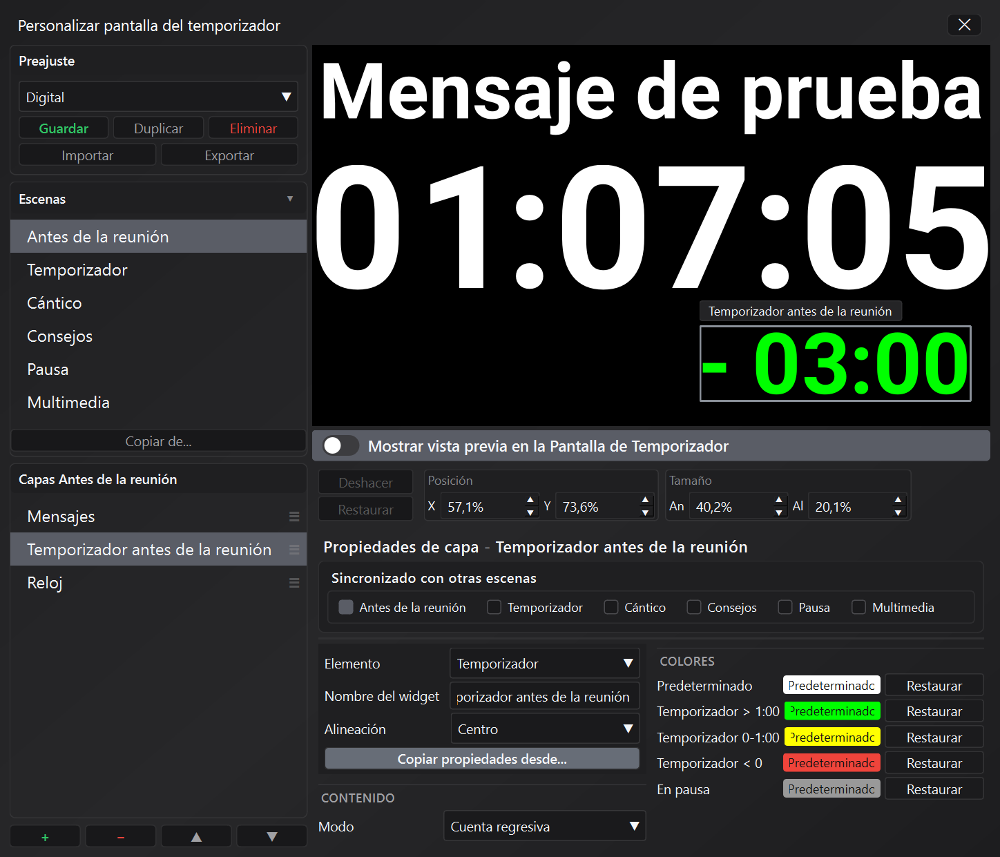
Comenzando desde un preset
Un preset es un diseño inicial.
Puede seleccionar un ajuste preestablecido en sección 9 · General y usarlo tal como está, o abrir el editor de personalización para editarlo.
Elige una escena
El diseño está organizado en escenas.
Cada escena corresponde a una situación diferente en la pantalla del temporizador. Esto le permite mostrar un diseño diferente según la hora o el tipo de parte que se está viendo.
Antes de realizar cambios, compruebe siempre qué escena está seleccionada.
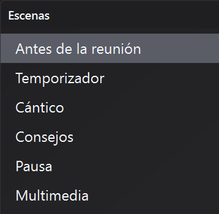
Tipos de capas disponibles
Cuando presiona + en el panel Capas, JW Time muestra los tipos de elementos que puede agregar a la escena.
Algunos niveles leen datos reales de la reunión y cambian automáticamente; otros se utilizan para construir el diseño gráfico.
No es conveniente mostrar todas las propiedades de cada nivel en el manual, porque el panel de propiedades cambia según
al tipo seleccionado. Aquí encontrarás qué hace cada nivel y cuándo usarlo.
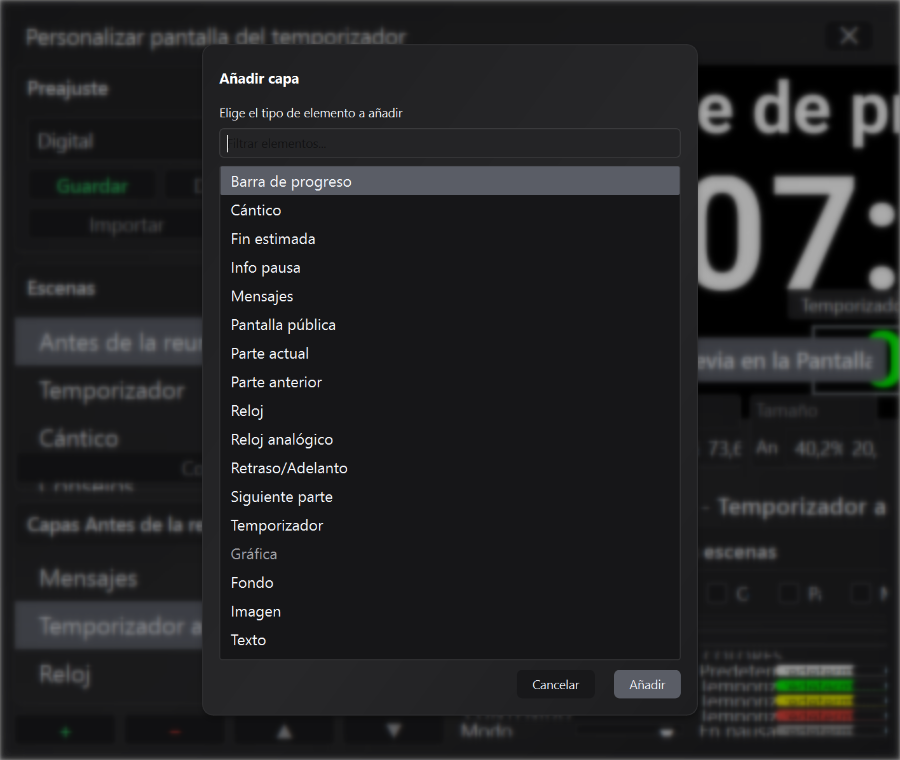
Niveles dinámicos principales
Temporizador: muestra el tiempo de la parte activa. Se puede configurar como cuenta atrás o cuenta progresiva.
Canción: muestra información de la canción cuando la escena trata sobre una canción.
Mensajes: muestra los mensajes enviados desde la ventana principal, tanto en pantalla completa como en formato parcial.
Reloj: Muestra la hora digital.
Reloj analógico: agrega un reloj gráfico personalizable.
Información de la reunión
Parte actual: Muestra el título de la parte actual.
Siguiente parte: muestra la siguiente parte, útil para preparar el cambio.
Parte anterior: muestra información sobre la parte recién terminada, cuando el diseño lo requiere.
Fin estimado- Muestra la hora de finalización calculada por la aplicación.
Retraso/Temprano: muestra el delta en comparación con el tiempo programado.
Información de pausa: muestra información relacionada con pausas o tiempo técnico.
Barra de progreso: muestra gráficamente el progreso del tiempo.
Capas gráficas gratuitas
Fondo: añade un cuadro de color, útil para crear bandas, áreas de contraste o contenedores visuales.
Texto: añade un texto fijo personalizado.
Imagen: Agrega un logotipo o imagen decorativa.
Fondo, Texto y Imagen las capas se pueden agregar varias veces.
Para otros niveles, si ya existe un elemento del mismo tipo, el editor te ofrece vincularlo a otra escena.
o crear uno independiente cuando sea necesario.
Editar el diseño
En el editor puede editar las capas presentes en la escena seleccionada.
Para cada capa puede cambiar la posición y el tamaño de tres maneras:
con el mouse, moviendo o cambiando el tamaño del cuadro en la vista previa
con el teclado, usando las flechas para moverlo
con los valores de Posición y Tamaño que se muestran debajo de la vista previa
Los valores X e Y controlan la posición de la capa.
Los valores de Ancho y Alt controlan el tamaño de la capa.
Todos estos valores están expresados en porcentaje.
En el panel de capas también puedes gestionar lasorden de superposición: cada nivel puede
permanecer por encima o por debajo de los demás, determinando cuál aparece en primer plano en caso de superposición.
Puedes cambiar el orden arrastrando las capas en la lista o usando los botones
▲ y ▼ debajo de él.
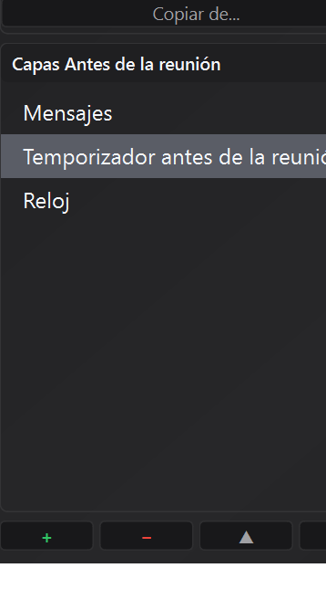
Mover, cambiar el tamaño y ordenar capas
Después de seleccionar un nivel, puedes:
arrástrelo con el mouse para moverlo en la vista previa
utilice las flechas del teclado para ajustar su posición (flechas: 0,5% — Cambio: 2,0% — Control: 0,1%)
arrastre los bordes o esquinas del marco para cambiar su tamaño
Debajo de la vista previa encontrarás los controles numéricos. incógnita, Y, Ancho y Alt.
para ajustar la posición y el tamaño con precisión.
Después de los cambios, guarde el diseño y aplíquelo. Puedes volver a abrir el editor en cualquier momento para actualizarlo.
La función Mensajes le permite comunicarse de forma discreta y clara con el orador durante la reunión, permitiéndole
advertirle o darle instrucciones sin interrumpir o perturbar el desarrollo de la parte. Aparecen mensajes en la pantalla.
del temporizador, para que el hablante los vea en tiempo real sin distracciones.
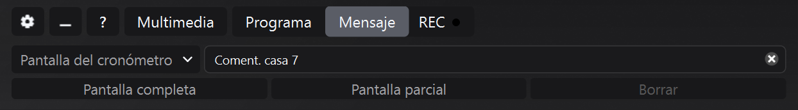
6.1 · Mensaje en pantalla completa
Haz clic en el área donde dice Insertar mensaje.
Introduzca el texto.
Prensa Pantalla completa → el texto aparece en pantalla completa en el monitor del temporizador.
6.2 · Mensaje de pantalla parcial
Haz clic en el área donde dice Insertar mensaje.
Introduzca el texto.
Prensa Pantalla parcial → el texto aparece en la ventana Contador de tiempo sin cubrirlo por completo, lo que permite al hablante ver tanto el mensaje como el cronómetro.
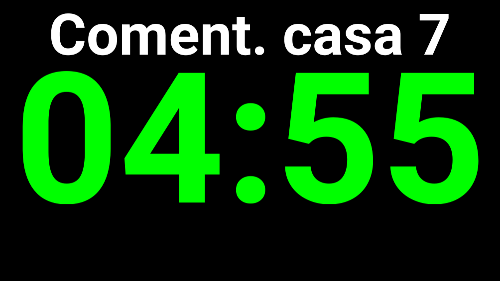
6.3 · Contador de tiempo del espejo
Cuando envía un mensaje, aparece automáticamente una ventana de vista previa móvil y de tamaño variable que muestra
exactamente lo que el orador ve en el monitor del temporizador. Esto le permite comprobar la pantalla en tiempo real.
del mensaje y el cronómetro.
el botón REC Está ubicado en la barra inferior junto a Programación y Mensaje. El punto al lado del texto muestra
el estado de grabación (espera, activa, pausada o conversión de MP3), mientras que el panel REC proporciona controles rápidos
para abrir la carpeta JWTimeREC, administrar grabaciones manuales y monitorear los niveles de audio de la PC y el micrófono.
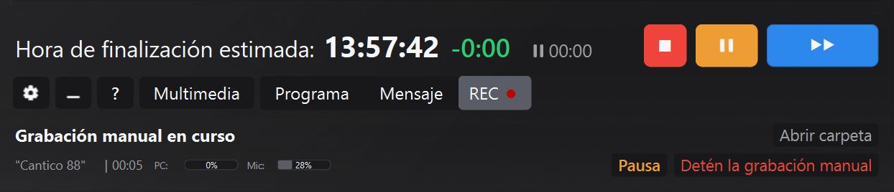
7.1 · Indicadores y estados de los botones
Esperando: el punto permanece gris y el panel muestra "Esperando" / "No hay grabación activa".
Grabación en curso: el punto parpadea en rojo y el panel muestra "Grabación en curso" con el título de la parte y el cronómetro.
Pausa: el punto cambia a naranja; La inscripción queda suspendida y puede reanudarse.
Conversión MP3: el punto se vuelve azul y el botón permanece desactivado hasta que finaliza la exportación del archivo.
7.2 · Controles rápidos REC
El panel REC recoge los controles a utilizar sin entrar en los ajustes:
Abrir carpeta: abre directamente el directorio JWTimeREC que contiene las grabaciones.
Habilitar/Deshabilitar la grabación: habilita o detiene la grabación manual sin ingresar la configuración.
Pausa/Reanudar: botón visible durante la grabación para suspender temporalmente el audio (por ejemplo, oraciones) y reanudarlo en el mismo archivo.
Detalles en línea: el título de la fila activa y la duración actualizada aparecen debajo del estado.
Mensajes automáticos: indica inmediatamente cuando la grabación está desactivada o cuando una conversión está en curso.
7.3 · Área de alternancia con niveles de audio
Al abrir REC, aparece un panel siempre visible en la barra inferior con el estado de grabación y el medidor de audio.
Aquí puede iniciar/detener grabaciones manuales, monitorear los niveles de PC/micrófono y abrir la carpeta JWTimeREC con un solo clic.
Cuando el Servidor Web está activo, puede abrirlo desde otro dispositivo en la misma red local a través del navegador.
Esto permite mostrar el temporizador en proyectores externos, tabletas o computadoras, y es útil para el presidente.
que sigue el cronómetro de las distintas partes.
Ver temporizadores y contadores de tiempo en pantalla completa.
Imprime el programa.
Comprueba el progreso del cronometraje en tiempo real.
Realice operaciones remotas en el temporizador y el horario, si el control remoto está habilitado.
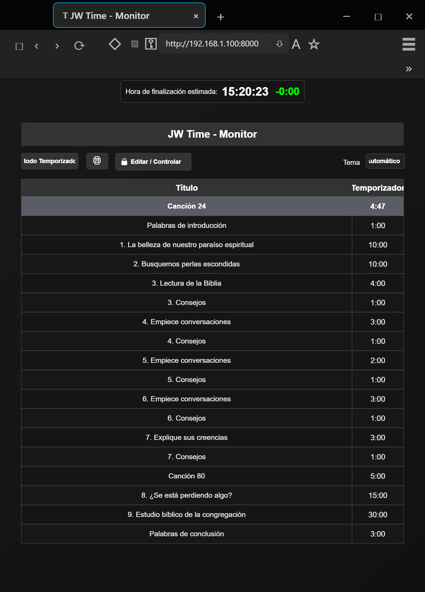
8.2 · Control del temporizador y programa desde el navegador
Si el control remoto está habilitado, desde el navegador se puede intervenir en el temporizador y la programación sin estar
frente a la computadora principal.
Las operaciones disponibles dependen de los permisos configurados y pueden incluir:
iniciar el temporizador
pausar y reanudar
detener
controlar el programa/lista
modificar las duraciones o valores disponibles en la lista, si el rol autorizado lo permite
Puede abrir el servidor web ingresando la dirección que se muestra en la aplicación o usando el QR si está disponible.
Dependiendo de la configuración, se pueden proporcionar diferentes niveles de acceso, por ejemplo, solo para acceso
visualización o control y modificación. Si está configurado, el acceso puede requerir un PIN.
8.3 · Acceso remoto para reuniones por videoconferencia
Cuando la persona que necesita seguir o controlar JW Time no está en la misma red local, puede generar un enlace remoto temporal.
Este escenario es útil para reuniones por videoconferencia, asistencia remota o gestión desde un dispositivo conectado
a otra red.
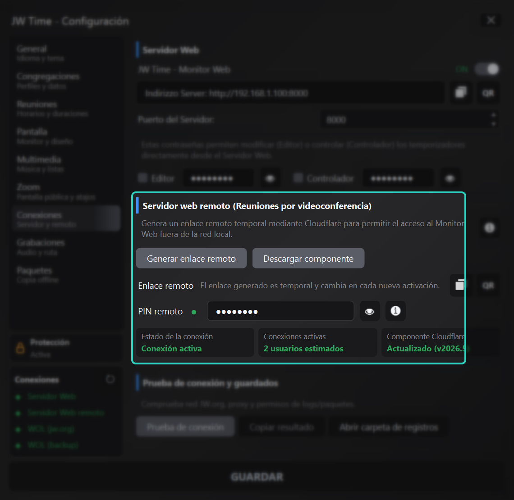
Misma interfaz web: el enlace remoto abre el Web Monitor desde el navegador, como ocurre en la red local.
Enlace temporal: el enlace remoto cambia con cada activación y no debe considerarse permanente.
PIN remoto: cuando se configura, protege las funciones accesibles desde fuera de la red local.
Uso con videoconferencia: permite a cualquiera que siga la reunión desde fuera de la red consultar o comprobar el programa según los permisos establecidos.
La parte operativa se configura en sección 15.2 · Servidor Web Remoto.
La configuración de Zoom permanece separada: Zoom gestiona el uso compartido y los accesos directos,
mientras que el enlace remoto se refiere al Web Monitor.
Parte II · Paneles de configuración
En esta parte puedes configurar el comportamiento de la aplicación: ajustes generales, perfiles de congregación, reuniones,
Pantalla de temporizador, medios, zoom, monitor web y de servidor, grabaciones y copia de seguridad y restauración.
Selecciona el idioma: cambia el idioma de la interfaz.
Idiomas del programa: define en qué idioma descargar o mostrar la programación semanal.
Selecciona el tema: establece el tema gráfico de la aplicación.
Escala de interfaz: adapta texto y controla tamaños; el cambio se aplica después del reinicio.
Formato de hora: alterna el formato de 24 h y el formato de 12 h AM/PM.
Gestión del temporizador
Pausa automática: inserta automáticamente una pausa entre una parte y la siguiente cuando presionas Inicio/Siguiente.
Mostrar columna Fin: muestra en la tabla del programa la hora prevista de finalización de la parte actual y de las siguientes, calculada en tiempo real a partir de la hora actual, los temporizadores restantes y las desviaciones acumuladas.
Inicio
Iniciar con Windows: Abre JW Time automáticamente cuando inicias sesión en Windows.
Novedades
Muestra las novedades al inicio: abre un resumen conciso de las funciones introducidas en la aplicación, para que aquellos que usan JW Time puedan descubrir rápidamente qué vale la pena probar.
Podrás desactivarlo cuando el grupo ya esté familiarizado con la versión instalada.
Este panel le permite administrar los perfiles de las congregaciones. Cada perfil puede mantener configuraciones dedicadas,
para que JW Time pueda adaptarse a diferentes contextos sin tener que reconfigurar ventanas, medios y diseño cada vez.
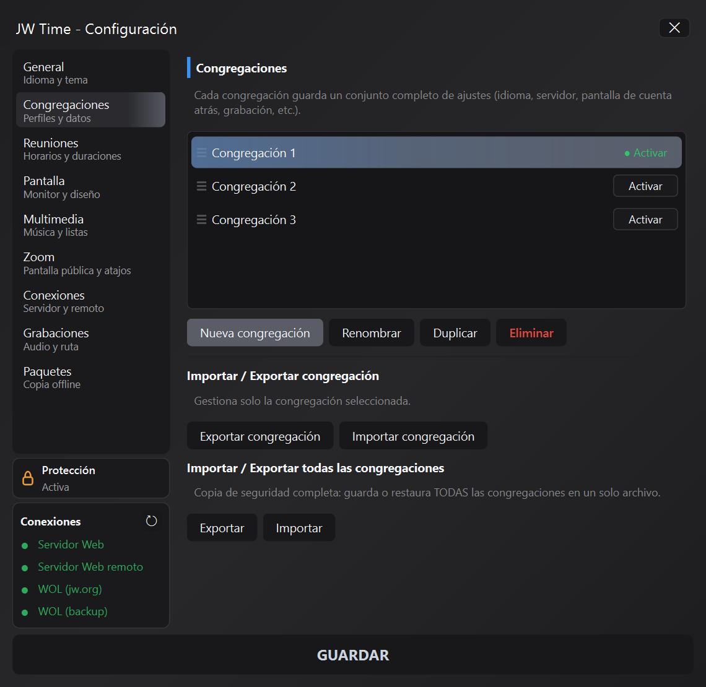
Perfiles de congregación
Lista de congregaciones: muestra los perfiles disponibles. Cada perfil mantiene su propio idioma, servidor, pantallas, grabaciones, medios y configuraciones.
Nueva Congregación- Cree un perfil separado para configurar.
Cambiar nombre: cambia el nombre del perfil seleccionado sin perder la configuración.
Duplicar: crea una copia del perfil actual, útil cuando dos configuraciones son similares.
Eliminar: elimina el perfil seleccionado cuando ya no es necesario.
Importar / Exportar
Exportar congregación: guardar solo el perfil seleccionado.
Importar congregación: carga un perfil previamente exportado.
Exportar- Crea una copia de seguridad completa de todas las congregaciones.
Importar: restaura una copia de seguridad que contiene varias congregaciones.
11 · Reuniones (Temporizador de inicio de reunión) ↑ Índice
Este panel se utiliza para programar la cuenta atrás de inicio de reunión en la Pantalla Pública.
Tú estableces el día, la hora y el avance (en minutos) que quieres hacer
iniciar la cuenta regresiva.
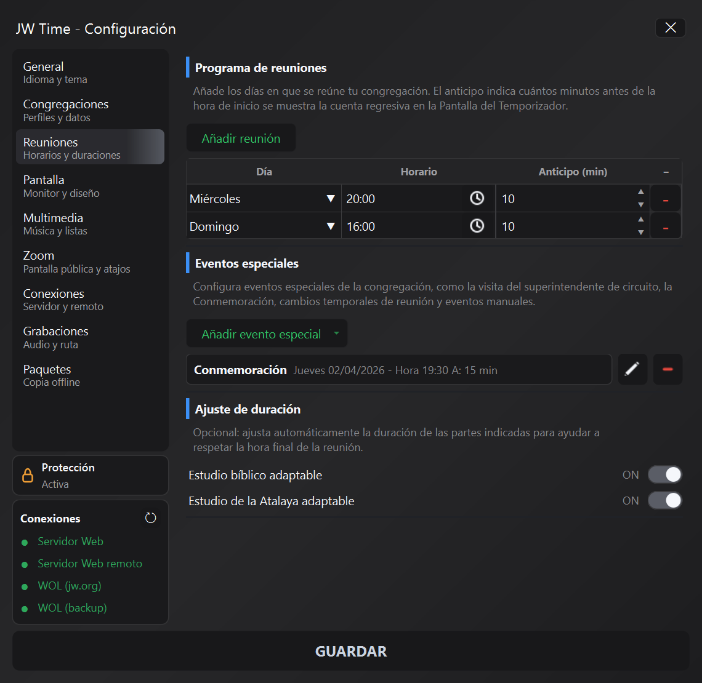
11.1 · Programación (Día · Hora · Avance)
Agregar reunión: inserta una nueva fila en el horario.
Día: elige el día de la semana en el que se realiza la reunión.
Hora: establece la hora de inicio de la reunión.
Avance (min): cuántos minutos antes de la hora establecida debe aparecer la cuenta atrás en la Pantalla Pública.
-: elimina la línea de tiempo que ya no es necesaria.
11.2 · Eventos especiales
Agregar evento especial: cree eventos como la visita del superintendente de circuito, eventos conmemorativos o manuales.
Visita SC: aplicar las normas y horarios dedicados a la visita.
Memorial- Registra una cita especial con una fecha y hora específicas.
Editar/eliminar: los botones de la derecha le permiten actualizar o eliminar el evento.
11.3 · Adaptar Tiempo
Estudio bíblico adaptativo: ajusta automáticamente el Estudio bíblico de congregación para ayudar a respetar la hora final.
Estudio Adaptativo de la Atalaya: Aplicar la misma lógica al Estudio de La Atalaya.
Nota: los horarios de inicio son para la cuenta regresiva pública; En cambio, la hora de finalización estimada depende del cronograma y de cualquier ajuste de duración.
Este panel recopila las configuraciones dedicadas a la pantalla Contador de tiempo y la Pantalla Pública. Desde aquí puedes
elige dónde mostrar la información, cómo presentarla y qué elementos hacer visibles durante la reunión.
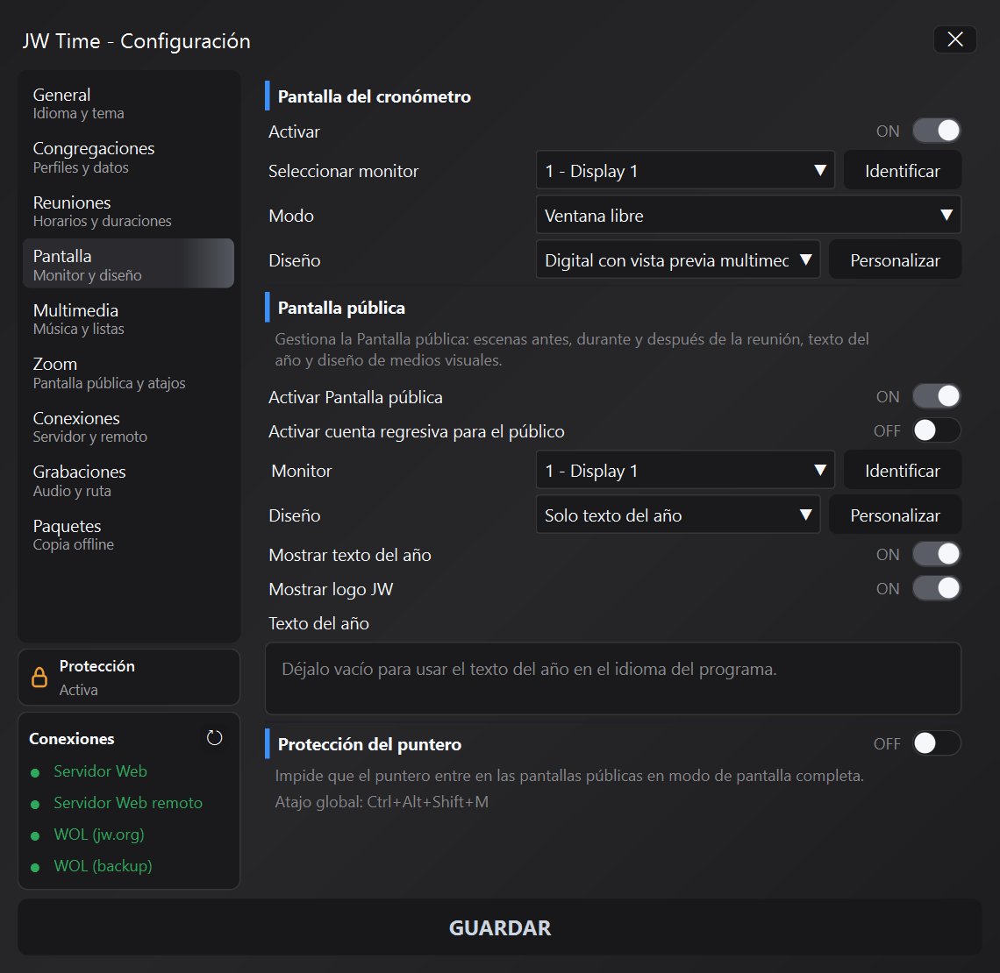
Habilitar: activa o desactiva la pantalla del temporizador.
Seleccionar monitor: elige el monitor o ventana en la que mostrar el temporizador.
Identificar: muestra una referencia en el monitor seleccionado, útil cuando se conectan varias pantallas.
Modo: establece cómo se debe abrir el temporizador, por ejemplo como una ventana libre.
Fondo transparente: Hace que la ventana sea transparente cuando el modo lo permite.
Diseño: selecciona el preajuste gráfico de la pantalla del temporizador.
Personalizar: abre el editor del diseño seleccionado.
Pantalla Pública
Activar Pantalla Pública: habilita la ventana dedicada a los contenidos visibles de la sala.
Activar cuenta atrás para el público: muestra la cuenta atrás para el inicio de la reunión en la Pantalla Pública.
Monitor: Seleccione dónde abrir la ventana pública.
Diseño: elige el preajuste gráfico de la Pantalla Pública.
Mostrar escritura del año: Habilita u oculta la escritura del año.
Mostrar logotipo de JW: Muestra u oculta el logotipo en la escena pública.
Año de escritura del texto: permite insertar un texto personalizado; si permanece vacío, se utiliza el año en el lenguaje del programa.
Este panel gestiona el comportamiento de la Ventana Multimedia, el caché local y las opciones vinculadas a los contenidos.
utilizado durante o después de la reunión.
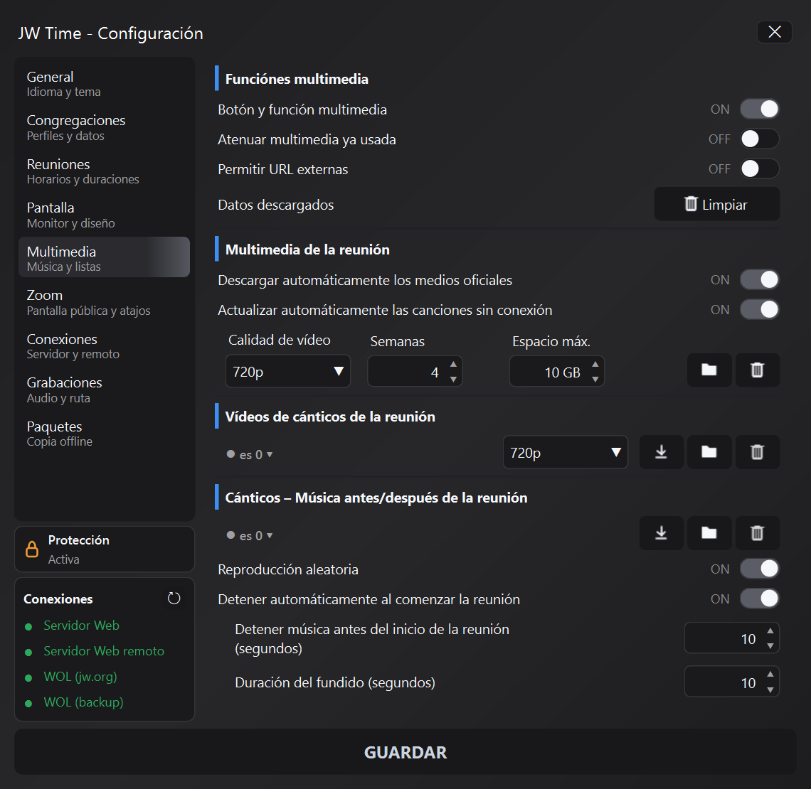
Funciones multimedia
Botón multimedia y función: muestra u oculta el botón Multimedia y habilita funciones relacionadas.
Atenuar medios ya usados: hace que los elementos usados sean más fáciles de reconocer en la Ventana Multimedia.
Permitir URL externas: tras confirmación, permite URL HTTPS externas a jw.org y wol.jw.org y las muestra en el navegador integrado.
Media Gathering
Descarga automáticamente los medios oficiales: ayuda a que los medios oficiales de la semana estén disponibles con antelación cuando la red lo permite.
Se mejoró la gestión de programas manuales y descargas automáticas de medios oficiales: las descargas permanecen ancladas a la semana actual y el progreso de las semanas siguientes se muestra con más claridad.
Actualizar canciones automáticamente sin conexión: mantiene actualizado el catálogo de canciones descargadas.
Calidad de vídeo: elige la resolución de los vídeos oficiales.
Semanas: indica cuantas semanas conservar o preparar.
Espacio máximo: limita el espacio utilizado por la caché de medios.
Carpeta/eliminar: Abre la carpeta de contenidos o limpia los archivos descargados.
Canciones y música
Meeting Video Songs: gestiona la descarga, la calidad y la carpeta de los vídeos de las canciones.
Canciones - Música antes/después de la reunión: gestiona la música utilizada como fondo.
Reproducción aleatoria: Reproduce canciones en orden aleatorio.
Se detiene automáticamente al comienzo de la reunión: detiene la música cuando se inicia el programa.
Detener la música antes de que comience la reunión: define cuántos segundos antes se debe detener el fondo.
Duración del desvanecimiento: ajusta el desvanecimiento del audio al cerrar o cambiar de canción.
Este panel contiene configuraciones útiles cuando JW Time se usa junto con Zoom u otras configuraciones
Salas que requieren controles de audio/vídeo dedicados. Las siguientes opciones activan las teclas de Zoom de
4 · Ventana de medios.
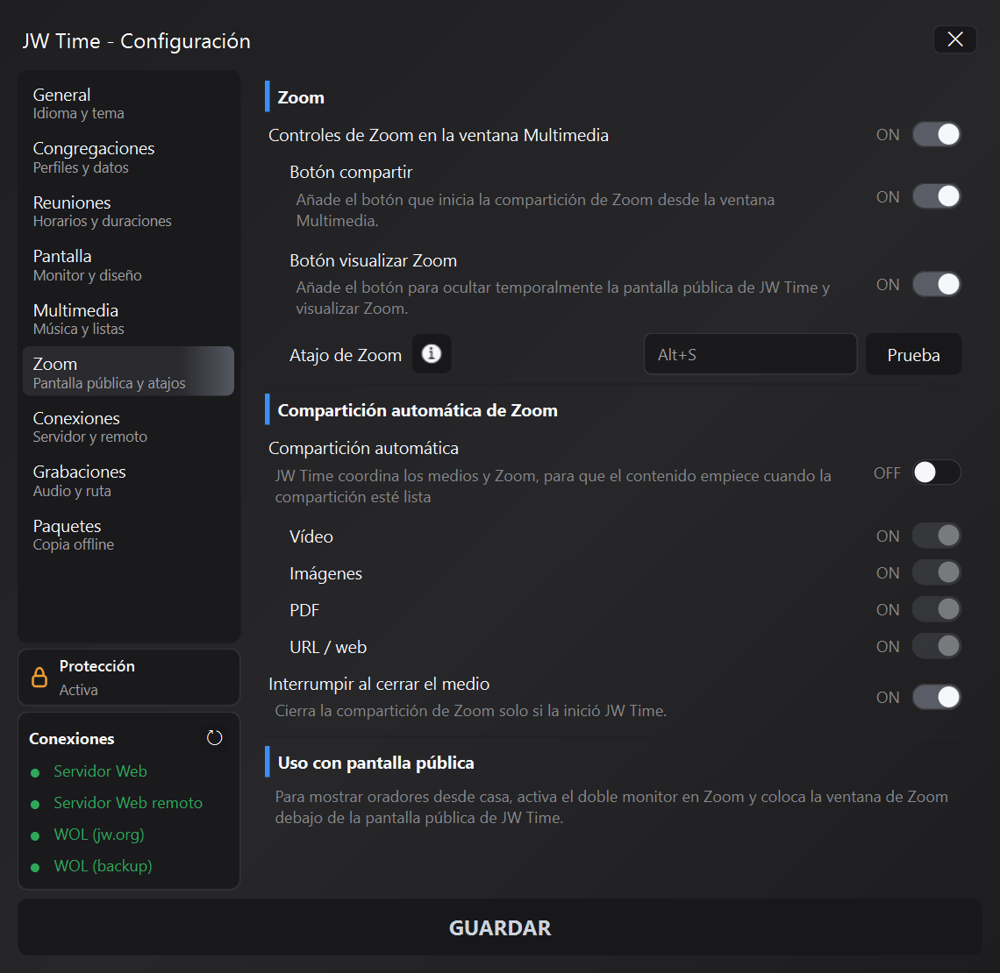
Zoom
Controles de Zoom: muestran las teclas dedicadas a Zoom en la Ventana Multimedia.
Zoom Sharing: habilita el botón que envía el acceso directo para compartir a Zoom.
Mostrar Zoom al público: habilita el botón que oculta temporalmente la Pantalla Pública de JW Time para mostrar los oradores o la ventana de Zoom ya ubicada debajo, en el monitor de la sala.
Acceso directo para compartir: debe ser el mismo acceso directo global configurado en Zoom para iniciar o detener el uso compartido de pantalla.
Prueba: Envía el acceso directo y comprueba si Zoom abre o cambia el estado de compartir.
Acceso directo de Zoom
JW Time no elige la ventana o pantalla para compartir en Zoom por usted: envíe la combinación de teclas
que indicaste en este panel. Por este motivo, el mismo acceso directo también debe estar activo en la configuración.
de Zoom, preferiblemente como un atajo global. Si utiliza una combinación diferente en Zoom, es posible que la tecla
Compartir y el modo Zoom Auto no funcionen de manera confiable.
Antes de la reunión, verifique el flujo completo: prepare Zoom en el monitor público, coloque la Pantalla Pública debajo
la ventana de los oradores o la pantalla Zoom duplicada, pruebe el acceso directo con Prueba y luego
utilice los controles de la Ventana Multimedia.
Automatización de medios
Inicio automático: cuando la tecla Zoom Auto está activo en la Ventana Multimedia, comienza a compartir cuando se reproduce un medio.
Interrumpir al cerrar el medio: detiene el uso compartido de Zoom cuando el medio se cierra o termina, solo si JW Time inició el uso compartido.
Pausa inicial: prepara los medios para pausar después de que comienza a compartirse.
Restaurar el foco: Devuelve el foco a la Ventana Multimedia después de la acción de Zoom.
Usar con reuniones de videoconferencia
Si alguien necesita consultar o controlar JW Time sin conexión durante una reunión de videoconferencia,
no se puede configurar desde Zoom: utilice apartado 8.3 · Acceso remoto para reuniones por videoconferencia.
En este panel solo quedan los accesos directos, el uso compartido y la gestión de la ventana de Zoom.
Este panel gestiona la conectividad de la aplicación: el Web Monitor y el Web Server para visualización y control desde el navegador,
el QR para acceso rápido, control remoto, pruebas de conexión avanzadas y gestión de registros.
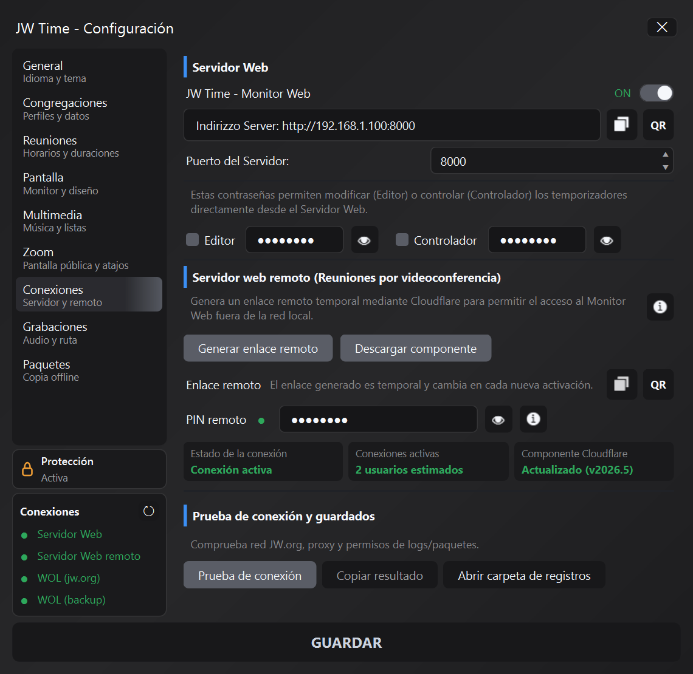
15.1 · Web Monitor y Servidor Web
JW Time - Web Monitor: activa o desactiva el servidor interno.
Dirección del servidor: muestra la URL para abrir en la red local. En el manual usamos una dirección genérica, por ejemplo http://192.168.1.100:8000.
Copiar dirección: Copia la URL al portapapeles.
QR: muestra un código QR para abrir más rápidamente Web Monitor desde su teléfono o tableta.
Puerto del servidor: establece el puerto HTTP, normalmente 8000.
Editor/Controlador: habilita contraseñas para editar o controlar el temporizador y la programación desde el navegador. Con el rol de Controlador, Web Monitor también se convierte en un panel operativo: puede iniciar, pausar, detener y actualizar los valores disponibles sin regresar a la computadora principal.
Se añadió en el Monitor Web la posibilidad de modificar el número de los cánticos y el nombre de las partes, tanto en modo Editor como en modo Controlador.
Cuando el servidor web está activo, JW Time se puede abrir desde otro dispositivo en la misma red local a través del navegador,
para utilizar Web Monitor desde su teléfono, tableta u otra computadora.
15.2 · Servidor web remoto
Esta sección se utiliza para hacer que Web Monitor sea accesible incluso fuera de la red local, por ejemplo durante
Reuniones a través de videoconferencia. Para conocer el contexto de uso, consulte apartado 8.3 · Acceso remoto para reuniones por videoconferencia;
Aquí encontrará los controles prácticos.
Generar enlace remoto: crea un enlace temporal a través del componente Cloudflare cuando se necesita acceso fuera de la red local.
Descargar componente: descarga el componente necesario para la conexión remota.
Enlace remoto: Muestra el enlace generado y los botones Copiar/QR.
PIN remoto: Protege el acceso a funciones remotas cuando se configura.
Estado del enlace: indica si el componente remoto, las conexiones activas y Cloudflare están disponibles.
15.3 · Control Remoto
Si la función está habilitada, el Servidor Web se puede utilizar no sólo para ver, sino también para ejecutar
Operaciones remotas de temporizador y programa. Cuando la función Controlador está habilitada, la pantalla web muestra
También controla para intervenir en los valores disponibles, por ejemplo la duración de una parte.
Entre estos pueden estar disponibles los siguientes:
iniciar el temporizador
pausar y reanudar
detener
controlar el programa/lista
Dependiendo de la configuración, pueden estar disponibles diferentes niveles de acceso para distinguir
consulta sencilla desde las funciones de control o modificación.
15.4 · Prueba de conexión
Prueba de conexión: comprobar permisos de red, JW.org, proxy y escritura.
Copiar resultado: copia el resultado de la prueba para asistencia o diagnóstico.
Abrir carpeta de registro: abre directamente la carpeta de registro de la aplicación.